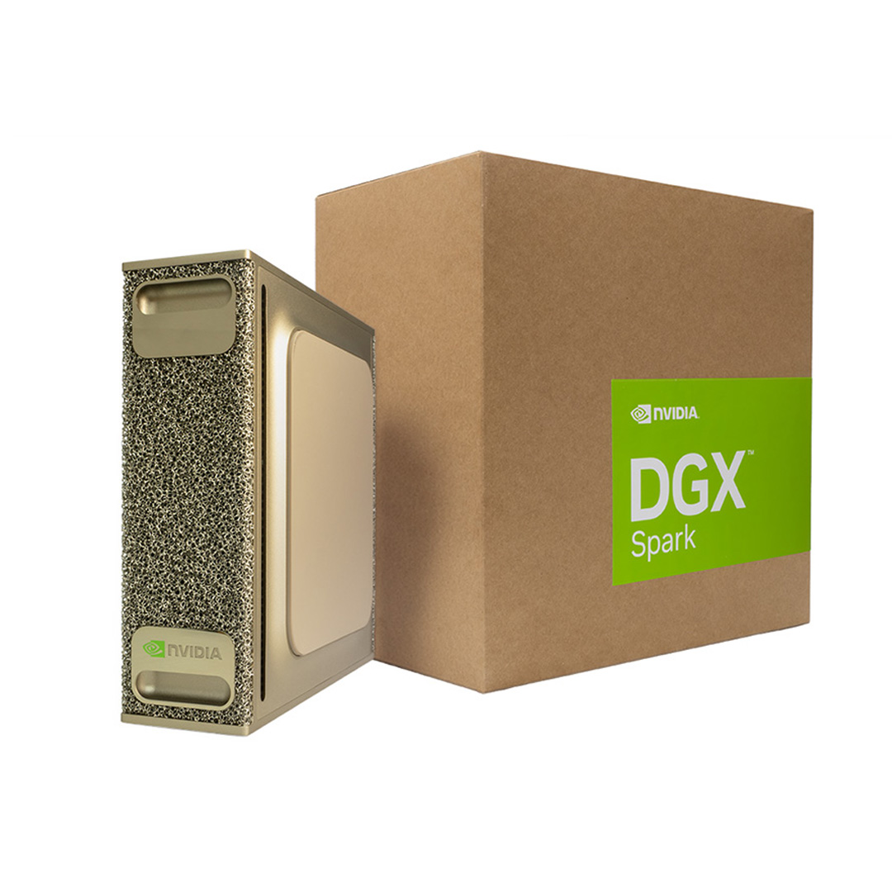
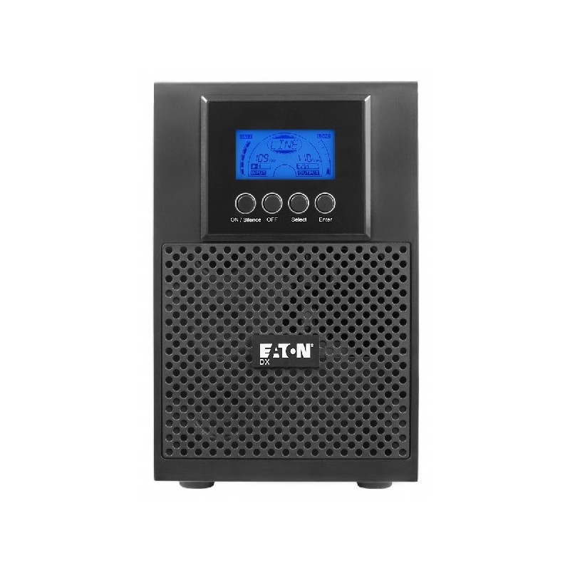

Decisión con evidencia
Tableros PDI L1–L4 y alertas ejecutivas en días, no en semanas.
Versión ejecutiva · 2026-2 · CEITTO Colmayor
Objetivo: Identificar tendencias y oportunidades en Ciencia, Tecnología e Innovación para el CMA, transformando información del entorno en insumos para la decisión institucional.
Direccionamiento
Cuatro focos del Observatorio CTi. Clic para detalle.
Contexto
Seis frentes críticos. Clic para el detalle en una línea.
Valor ejecutivo
Resumen alineado al Plan de Desarrollo 2024-2028 (L1, L2 y L4) y a la operación CEITTO.
Tableros PDI L1–L4 y alertas ejecutivas en días, no en semanas.
Radar nacional e internacional con embudo hasta cierre y productos.
Expedientes con dato oficial, reportado o propuesto, listos para CNA.
Linaje del dato, evidencia y soporte frente a mapas de riesgos G+.
DGX Spark + CEITTO para VT/IC, IA local y servicios externos.
Articula facultades, Distrito, redes y transferencia (ruta OTRI).
Alineación institucional
Cuatro líneas estratégicas. Clic para el aporte del Observatorio.
Infraestructura solicitada
NVIDIA DGX Spark + Eaton DX2000LAN: nodo de IA local para el Observatorio de datos y el Observatorio de convocatorias institucional.
Inferencia y ajuste de modelos en campus, sin depender solo de nube.
Scraping, clasificación y alertas de convocatorias N/I en producción.
Tableros de PDI, permanencia, semilleros y venta de servicios.
Estudios territoriales y sectoriales con entrega HTML/PDF/tablero.
UPS Eaton + nodo siempre disponible para agentes y reportes.
Detalle técnico y presupuesto en Presupuesto MVP. Proveedor: Clones y Periféricos.
Operación
Vista completa del ciclo. Clic en cada etapa para detalle del proceso.
Priorizar necesidades de información del CMA.
En: Solicitudes institucionales
Out: Alcance priorizado
Analista de datos · área solicitante
Indicadores clave
Selección ejecutiva. Clic en cada indicador.
Portafolio
Ocho líneas de servicio. Clic para foco.
Áreas de oportunidad.
Industria y academia.
Estudios a la medida.
Escenarios futuros.
Estado de la técnica.
Asesoría en VT/IC.
Apoyo a investigación.
Modelos de negocio / OTRI.
Gobernanza
Quiénes hacen posible el Observatorio. Clic para resaltar el rol.
Opera el Observatorio y articula VT/IC, transferencia y emprendimiento.
Infraestructura, seguridad, identidades y despliegue en campus.
Indicadores PDI, acreditación y reportes oficiales.
Demanda de estudios, datos académicos y uso de tableros.
Convocatorias, productos y proyección social.
Plan Indicativo IES y lectura de aporte Colmayor.
Plan de diseño · 2026-2
Hoja de ruta corta para poner en marcha el Observatorio en el semestre.
Del 1 de agosto al 18 de diciembre. Clic en cada barra para ver entregables.
Ampliar venta de servicios VT/IC y estudios a terceros.
Internacionalización, Graduados y Centro de Lenguas con dueños de dato.
Avanzar reconocimiento Minciencias de transferencia de resultados.
Capacidad humana
Roles mínimos para operar el Observatorio con calidad y continuidad.
Analista de datos CEITTO: opera el Observatorio de datos y el Observatorio de convocatorias institucional, limpia datos y entrega tableros/reportes.
Docente ocasional Fac. Administración (10 h) conecta demanda institucional.
Pruebas, documentación y soporte de la plataforma.
Infraestructura, seguridad, identidad y continuidad del servicio.
Detalle de dedicación y costos en Equipo.
Ecosistema
Conecta CEITTO con redes de VT/IC y la ruta de reconocimiento OTRI de Minciencias.
Reconocimiento de Oficinas de Transferencia de Resultados de Investigación: transferencia TRL 6–9, PI, spin-offs y articulación U–empresa.
Ver referencia →Ingreso a la red de inteligencia competitiva: plataformas, buenas prácticas y colaboración en VT/IC.
Ver referencia →Propiedad intelectual y vigilancia tecnológica con referentes del ecosistema.
Mecanismo de articulación con facultades, investigación, extensión, Distrito y aliados externos.
Trayectoria demostrada
Casos reales entregados desde CEITTO: reportes interactivos, tableros, anexos técnicos y dashboards en operación.
Talento humano
El escalamiento de la plataforma de vigilancia tecnológica con el área de TI y el soporte de la propuesta estarán a cargo del CEITTO.
Líder del escalamiento y soporte · Observatorio · Analista de datos · Observatorio de convocatorias institucional
Medio tiempo · CEITTOArticulación académica · Docente ocasional Fac. Administración (10 h) · conecta demanda institucional
10 horas de apoyoApoyo operativo · pruebas, documentación y soporte
Por demanda · CEITTORuta de escalamiento
Cinco fases para llevar el Observatorio de convocatorias institucional al ecosistema tecnológico institucional, con pruebas y soporte del equipo CEITTO. Clic en cada fase.
Infraestructura MVP
NVIDIA DGX Spark · supercomputador personal de IA + Eaton DX2000LAN · inversión total del MVP.

Precio lista $31.479.000 · oferta vigente en proveedor Colombia
Ver en Clones y Periféricos →
Presupuesto total del proyecto MVP
Hoja de ruta
Prioridades de producto digital y su foco institucional.
Vigilancia de convocatorias nacionales e internacionales
L1, L2 y L4 con indicadores IES Distrito y alertas
Bienestar → graduación y éxito académico
Estudios territoriales y sectoriales con evidencia
Gestión de PI, licenciamiento y spin-offs (TRL 6–9)
Inteligencia competitiva y vigilancia tecnológica en red
Consolidar ingreso y uso de plataformas de inteligencia competitiva.
Pipeline de productos digitales alineados al PDI y al Distrito.
La inteligencia artificial no reemplaza a las personas: las complementa. En el Observatorio CTi, la IA refuerza el criterio de los equipos humanos y ayuda a decidir con evidencia, de forma ética y responsable.